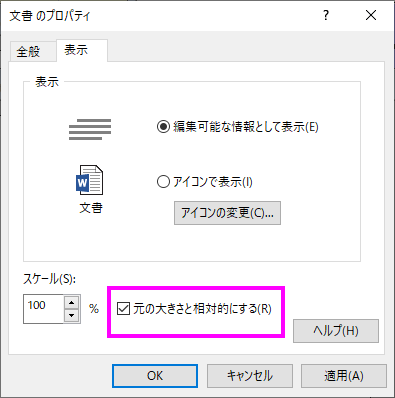

Fix-FontSize-for-Word-Obj
最終更新日：2019/09/08
Wordオブジェクトをグラフに挿入し、かつWord OLEのフォントサイズを保持したい場合は、Wordオブジェクトを右クリックしてプロパティを選択後、文書のプロパティダイアログを開き、表示タブに移動して元の大きさと相対的にするチェックボックスにチェックをします。

キーワード：グラフエクスポート、 Wordオブジェクト、フォントサイズ、Wordオブジェクトの挿入